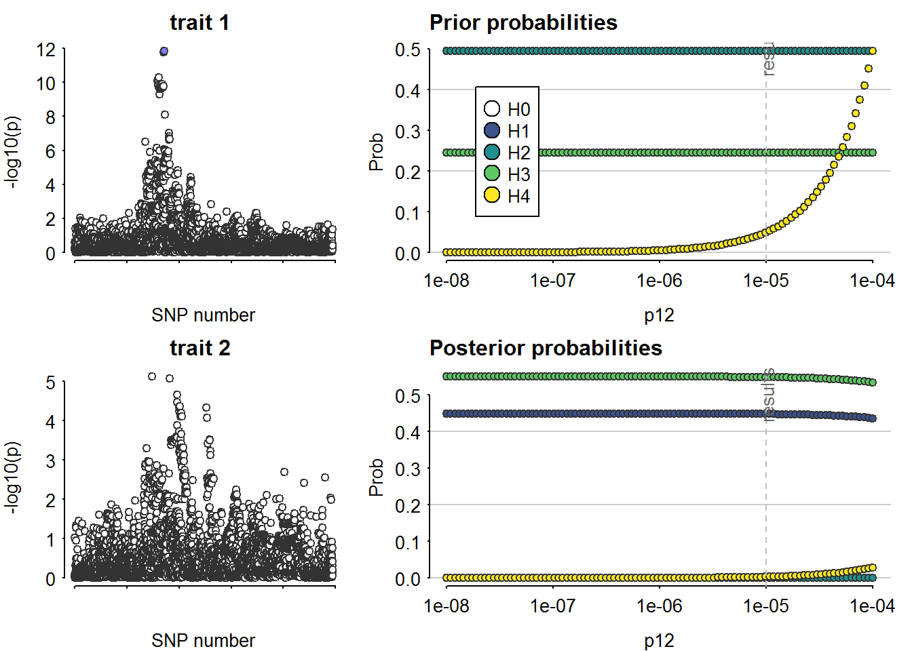

Last updated: 2023-05-03
Checks: 7 0
Knit directory: T1DSCREEN/
This reproducible R Markdown analysis was created with workflowr (version 1.7.0). The Checks tab describes the reproducibility checks that were applied when the results were created. The Past versions tab lists the development history.
Great! Since the R Markdown file has been committed to the Git repository, you know the exact version of the code that produced these results.
Great job! The global environment was empty. Objects defined in the global environment can affect the analysis in your R Markdown file in unknown ways. For reproduciblity it’s best to always run the code in an empty environment.
The command set.seed(20220313) was run prior to running
the code in the R Markdown file. Setting a seed ensures that any results
that rely on randomness, e.g. subsampling or permutations, are
reproducible.
Great job! Recording the operating system, R version, and package versions is critical for reproducibility.
Nice! There were no cached chunks for this analysis, so you can be confident that you successfully produced the results during this run.
Great job! Using relative paths to the files within your workflowr project makes it easier to run your code on other machines.
Great! You are using Git for version control. Tracking code development and connecting the code version to the results is critical for reproducibility.
The results in this page were generated with repository version 4e1528f. See the Past versions tab to see a history of the changes made to the R Markdown and HTML files.
Note that you need to be careful to ensure that all relevant files for
the analysis have been committed to Git prior to generating the results
(you can use wflow_publish or
wflow_git_commit). workflowr only checks the R Markdown
file, but you know if there are other scripts or data files that it
depends on. Below is the status of the Git repository when the results
were generated:
Ignored files:
Ignored: .Rhistory
Ignored: .Rproj.user/
Ignored: data/README_cis_eqtl.txt
Ignored: data/README_cis_eqtl_AF.txt
Ignored: data/cis-EQTL-AF.txt
Ignored: data/cis_sumstats/2018-07-18_SNP_AF_for_AlleleB_combined_allele_counts_and_MAF_pos_added.txt
Ignored: refs/
Untracked files:
Untracked: data/cis_eqtl_sumstats/
Untracked: data/cis_sumstats/JAK1_T1D.rds
Untracked: data/cis_sumstats/JAK3_T1D.rds
Untracked: data/export/IFNAR2_eqtl_TwoSampleMR.csv
Untracked: data/export/IL2RA_eqtl_TwoSampleMR.csv
Untracked: data/export/IL2RB_eqtl_TwoSampleMR.csv
Untracked: data/export/IL2RG_eqtl_TwoSampleMR.csv
Untracked: data/export/IL6R_eqtl_TwoSampleMR.csv
Untracked: data/export/JAK1_T1D_TwoSampleMR.csv
Untracked: data/export/JAK1_eqtl_TwoSampleMR.csv
Untracked: data/export/JAK2_eqtl_TwoSampleMR.csv
Untracked: data/export/JAK3_T1D_TwoSampleMR.csv
Untracked: data/export/JAK3_eqtl_TwoSampleMR.csv
Untracked: data/export/TYK2_eqtl_TwoSampleMR.csv
Unstaged changes:
Modified: .gitignore
Modified: analyses/CRP.Rmd
Deleted: analyses/CXCL10.Rmd
Deleted: analyses/TNF.Rmd
Modified: analyses/_site.yml
Modified: code/linux-shell-script-wget-and-decompress.txt
Deleted: data/IL6R_crp_LDmat-2023-04-25.RData
Note that any generated files, e.g. HTML, png, CSS, etc., are not included in this status report because it is ok for generated content to have uncommitted changes.
These are the previous versions of the repository in which changes were
made to the R Markdown (analyses/JAK1.Rmd) and HTML
(docs/JAK1.html) files. If you’ve configured a remote Git
repository (see ?wflow_git_remote), click on the hyperlinks
in the table below to view the files as they were in that past version.
| File | Version | Author | Date | Message |
|---|---|---|---|---|
| Rmd | 4e1528f | jkoskenniemi | 2023-05-03 | First commit |
Load packages and import data
library(tidyverse)-- Attaching packages --------------------------------------- tidyverse 1.3.1 --v ggplot2 3.4.1 v purrr 0.3.4
v tibble 3.1.7 v dplyr 1.0.9
v tidyr 1.2.0 v stringr 1.4.0
v readr 2.1.2 v forcats 0.5.1Warning: package 'ggplot2' was built under R version 4.2.2-- Conflicts ------------------------------------------ tidyverse_conflicts() --
x dplyr::filter() masks stats::filter()
x dplyr::lag() masks stats::lag()library(data.table)
Attaching package: 'data.table'The following objects are masked from 'package:dplyr':
between, first, lastThe following object is masked from 'package:purrr':
transposelibrary(coloc)This is a new update to coloc.library(TwoSampleMR)TwoSampleMR version 0.5.6
[>] New: Option to use non-European LD reference panels for clumping etc
[>] Some studies temporarily quarantined to verify effect allele
[>] See news(package='TwoSampleMR') and https://gwas.mrcieu.ac.uk for further detailslibrary(ggpubr)
library(ieugwasr)API: public: http://gwas-api.mrcieu.ac.uk/
Attaching package: 'ieugwasr'The following object is masked from 'package:TwoSampleMR':
ld_matrixlibrary(rio)Warning: package 'rio' was built under R version 4.2.2library(here)Warning: package 'here' was built under R version 4.2.2here() starts at C:/Users/jajoko/Documents/T1DSCREENhere::i_am("analyses/JAK1.Rmd")here() starts at C:/Users/jajoko/Documents/T1DSCREENJAK1_eqtl <- read_exposure_data("data/export/JAK1_eqtl_TwoSampleMR.csv", sep=",")Warning in format_data(as.data.frame(exposure_dat), type = "exposure", snps =
NULL, : se column is not numeric. Coercing...Warning in format_data(as.data.frame(exposure_dat), type = "exposure", snps = NULL, : The following SNP(s) are missing required information for the MR tests and will be excluded
rs310233
rs310235
rs310244
rs2780891
rs167454
rs2780816
rs310227
rs310241
rs2780885
rs2780902
rs2780819
rs310213
rs2780822
rs310215
rs310225
rs310219
rs2780820
rs310216
rs2780895
rs2230588
rs2780818
rs831578
rs12063205
rs2132754
rs6672608
rs1041624
rs974019
rs1926310
rs872800
rs17127114
rs11208534
rs2780896
rs11208535
rs7550737
rs80309750
rs7525150
rs1553025
rs3915922
rs310197
rs310204
rs310256
rs310257
rs310255
rs3790545
rs2780833
rs310196
rs11208536
rs310252
rs310249
rs310250
rs310254
rs310208
rs36121854
rs2780831
rs928509
rs310231
rs310209
rs1048007
rs310230
rs310198
rs1556561
rs3790529
rs142102613
rs12027095
rs76286105
rs11208523
rs2254002
rs6588104
rs58510811
rs10493370
rs10493371
rs3790527
rs74570412
rs2780824
rs45598436
rs12022913
rs12353950
rs12029333
rs4915675
rs11208519
rs310245
rs11208518
rs12049564
rs6671355
rs12038159
rs7528403
rs17126970
rs10493368
rs12043554
rs10889498
rs12739954
rs12023256
rs6661723
rs1039125
rs12040026
rs56125796
rs10493367
rs17390055
rs4313429
rs310211
rs10889511
rs11208520
rs2780899
rs10493369
rs310229
rs12129819
rs998125
rs188698
rs310221
rs2780894
rs310214
rs310218
rs11208521
rs310217
rs1926312
rs310222
rs310207
rs310220
rs310224
rs2780827
rs310212
rs310228
rs10789166
rs11208577
rs2256443
rs12738806
rs310236
rs7549445
rs2780900
rs2780889
rs74942083
rs2780828
rs310223
rs10889517
rs76170379
rs3790538
rs2375474
rs12093269
rs6696692
rs4916005
rs182410506
rs7536540
rs2780817
rs12132206
rs12130991
rs6680481
rs12140511
rs12119466
rs12133255
rs12730549
rs4244165
rs4916014
rs10493372
rs12023040
rs12127284
rs67806955
rs79462686
rs478665
rs114269697
rs71647464
rs11208547
rs12569186
rs10493366
rs483317
rs56301536
rs11591096
rs11208550
rs561624
rs11208556
rs12127031
rs55947781
rs11208552
rs193114939
rs12046291
rs72675462
rs1039124
rs9645414
rs12752552
rs7546545
rs71645600
rs1497058
rs7546535
rs6663109
rs71647463
rs114008171
rs11585646
rs11576886
rs11208537
rs3737139
rs520179
rs17390852
rs10889512
rs6659146
rs6696345
rs2230586
rs72675448
rs17392542
rs11585932
rs12730896
rs11208530
rs11579283
rs147897519
rs74737950
rs72675467
rs55882186
rs72675451
rs72675457
rs2151572
rs2027053
rs12145200
rs971185
rs12563230
rs12562008
rs12563017
rs17127024
rs12563818
rs1826869
rs78825027
rs569581
rs11582696
rs12409178
rs72675478
rs185370982
rs1530887
rs12046636
rs7550068
rs72675438
rs2274945
rs189567887
rs578271
rs187299576
rs7539178
rs2256298
rs560773
rs576563
rs473780
rs77916841
rs11208532
rs7548666
rs114803872
rs80091449
rs529715
rs11579616
rs3014973
rs138138409
rs581239
rs542493
rs521188
rs185308582
rs528645
rs4916000
rs10493365
rs55989126
rs3790528
rs12028127
rs12043128
rs55850447
rs11808379
rs12029604
rs2935411
rs12044036
rs12038861
rs578481
rs186636583
rs12046407
rs11208584
rs542232
rs12047654
rs9633416
rs2274369
rs11208559
rs12037590
rs522815
rs11208531
rs11587486
rs11589788
rs10889502
rs17126987
rs12028020
rs571625
rs138374822
rs11588397
rs12402976
rs10493364
rs546595
rs78019881
rs12046987
rs60879425
rs489984
rs141116494
rs143400726
rs1390956
rs150027192
rs146453501
rs1766963
rs1887050
rs17389467
rs1497056
rs2780890
rs72675421
rs72675425
rs114615861
rs72675431
rs1887049
rs17389523
rs12409304
rs11584976
rs17389446
rs11208515
rs60545384
rs11208582
rs11581138
rs150147300
rs61032917
rs72679422
rs10789164
rs553002
rs2148323
rs1926304
rs3014974
rs181762394
rs6686274
rs12411195
rs12411196
rs72681327
rs6698882
rs61779779
rs11208516
rs149811799
rs150613722
rs150658359
rs181339352
rs72681330
rs141245109
rs11208506
rs6673673
rs4916011
rs499870
rs12568330
rs72675417
rs11208504
rs17391535
rs149037162
rs513857
rs41285408
rs17391500
rs75951234
rs145639273
rs10399745
rs6588109
rs151119857
rs58069373
rs12047470
rs579247
rs2935413
rs2935416
rs113789200
rs1983300
rs1926305
rs495588
rs17127169
rs72675415
rs12184322
rs11208581
rs1926309
rs78969683
rs67301710
rs61786113
rs1832442
rs4638162
rs550457
rs12407409
rs61784755
rs17127300
rs11208510
rs12730021
rs6588131
rs79593034
rs11208505
rs151042582
rs7549121
rs10889495
rs7516040
rs17127287
rs6696024
rs68112935
rs17127309
rs11579758
rs61784747
rs61786112
rs6588111
rs35741972
rs2935410
rs12027009
rs3844055
rs61786114
rs143038101
rs11208397
rs61784748
rs12130010
rs12408428
rs6696043
rs150123668
rs35623535
rs77762686
rs12408753
rs9436748
rs11208576
rs139708812
rs72675408
rs74841357
rs140798223
rs61784752
rs76454749
rs75359229
rs11208558
rs138579423
rs138945870
rs1983299
rs2780886
rs12408613
rs115470838
rs3014976
rs12402106
rs116125196
rs61784751
rs4916041
rs7534350
rs116894830
rs7520568
rs184777984
rs61784754
rs76055700
rs149301501
rs192055467
rs6673343
rs61786882
rs58870302
rs140984483
rs310247
rs184316561
rs12024635
rs11208554
rs6699671
rs1338516
rs55889764
rs3014975
rs78622333
rs7539994
rs61784743
rs3920617
rs1536171
rs61779780
rs6588129
rs78772779
rs2780901
rs35404763
rs3861946
rs147238114
rs7520742
rs534697
rs60803934
rs72673348
rs58367021
rs17397674
rs28599582
rs11208585
rs61784742
rs75686825
rs12030772
rs7520723
rs6663936
rs11208402
rs111313341
rs77223187
rs3014983
rs17393565
rs489500
rs184083406
rs11208401
rs6663598
rs149815342
rs72675414
rs74559196
rs116537847
rs75056797
rs142466008
rs12123592
rs12042059
rs12046741
rs525563
rs6698805
rs189151284
rs187323548
rs140879893
rs143719981
rs115706445
rs113926857
rs12404238
rs35112334
rs6704167
rs17127327
rs474568
rs143127987
rs554455
rs181350652
rs74838363
rs75967631
rs142487295
rs115833204
rs192480574
rs1327115
rs11208420
rs7529650
rs79305686
rs76635564
rs555146
rs139181902
rs6702545
rs142142785
rs1926308
rs10458572
rs1327120
rs140517619
rs12408851
rs10127731
rs4915938
rs2104503
rs11806971
rs1590640
rs11804481
rs17127680
rs17357400
rs111776826
rs141985781
rs61779782
rs11811946
rs11799558
rs71647497
rs12409877
rs115497103
rs113108966
rs7554485
rs61779781
rs189793921
rs150428831
rs825242
rs189601145
rs6660780
rs75380295
rs34439343
rs79728418
rs6660481
rs191380440
rs182285239
rs1887285
rs139223816
rs138926292
rs183657291
rs149201299
rs17127618
rs57484022
rs142603322
rs10789171
rs147540371
rs114327999
rs4636508
rs56353628
rs140512324
rs72677684
rs185990124
rs6682237
rs9436747
rs2935412
rs6657868
rs139874155
rs148720858
rs1570871
rs6686041
rs305547
rs825241
rs4915688
rs114683222
rs10889503
rs305549
rs12086738
rs11208538
rs72924268
rs184451770
rs182526754
rs114896931
rs112546671
rs17395035
rs74874110
rs473647
rs7542824
rs12745769
rs11208586
rs61781378
rs61779815
rs34103804
rs1566007
rs17412175
rs1329783
rs11208539
rs12406548
rs6664237
rs11208562
rs17128024
rs6668007
rs1436745
rs72679445
rs17127529
rs150805208
rs61779772
rs12758390
rs145728574
rs34476153
rs6662076
rs1874406
rs4916004
rs151329638
rs1536172
rs6661742
rs12129709
rs75081287
rs4469745
rs142854459
rs7528114
rs12402567
rs12025819
rs17359018
rs74860851
rs61765448
rs77917967
rs11208418
rs111392636
rs41312644
rs6674395
rs77492428
rs34981025
rs310201
rs12563191
rs140729586
rs17388633
rs310202
rs646443
rs10493361
rs12729349
rs1546187
rs75617507
rs4916007
rs7545743
rs10889515
rs12563451
rs34692920
rs1576388
rs189003683
rs145487715
rs12405010
rs79745672
rs149751078
rs11208409
rs75465244
rs11208408
rs55889533
rs72679419
rs2025803
rs6660166
rs11208410
rs17321902
rs71647473
rs72679433
rs4915946
rs1021566
rs7534739
rs10889474
rs11589721
rs7541665
rs4468199
rs12121669
rs151338194
rs79763246
rs10889475
rs6691140
rs17321951
rs1536467
rs1546186
rs11208411
rs310200
rs3762311
rs139321481
rs12727259
rs6673087
rs17397653
rs17384589
rs6690750
rs12091366
rs12403596
rs72920202
rs11208396
rs6691638
rs7523783
rs11208416
rs10889499
rs191026017
rs111891077
rs72673400
rs150852956
rs957576
rs141989857
rs147282315
rs17412368
rs147282262
rs1874405
rs34347295
rs1045895
rs77369072
rs72677698
rs11208509
rs2762833
rs17266284
rs10749749
rs72677699
rs189419726
rs11208407
rs500406
rs74860172
rs147171177
rs35211864
rs1496019
rs61779814
rs59266596
rs193026768
rs74911515
rs6588083
rs79508350
rs2375699
rs72679406
rs6698653
rs11578139
rs115561196
rs1408416
rs112516382
rs55655800
rs72673399
rs11208398
rs61784703
rs11576180
rs61784705
rs17126925
rs57712220
rs2025805
rs17750
rs114280901
rs146211259
rs17412403
rs7531110
rs147732540
rs17127141
rs75Warning in format_data(as.data.frame(exposure_dat), type = "exposure", snps =
NULL, : None of the provided SNPs can be used for MR analysis, they are missing
required information.JAK1_T1D <- read_outcome_data("data/export/JAK1_T1D_TwoSampleMR.csv", sep=",")
JAK1 <- harmonise_data(JAK1_eqtl, JAK1_T1D)Harmonising Whole blood JAK1 mRNA (4vucPG) and Risk of type 1 diabetes (xN25Oe)Removing the following SNPs for incompatible alleles:
rs76595887Removing the following SNPs for being palindromic with intermediate allele frequencies:
rs1028099, rs10493356, rs10789183, rs10789185, rs11208700, rs112314233, rs11587159, rs12037619, rs12091826, rs12127472, rs12407651, rs12564738, rs12568532, rs12758714, rs1327118, rs1333739, rs17412175, rs1892346, rs2274437, rs2801578, rs2801580, rs2840677, rs310239, rs3790436, rs3828036, rs3828040, rs4332387, rs4492587, rs4512686, rs4592284, rs4593866, rs4655539, rs4655598, rs4915688, rs4916041, rs61779319, rs61779814, rs6588136, rs6694927, rs6700226, rs6701146, rs6704418, rs72669385, rs7516965, rs7527706, rs7534350, rs7535217, rs7536558, rs79653480, rs825203, rs955255#create Manhattan plots with vertical lines indicating the selected area (see below 2.4)
JAK1_eqtl.fig <-
JAK1 %>%
ggplot(aes(x = pos.exposure/1000, y=-log10(pval.exposure))) +
geom_point()+
geom_hline(yintercept=8, linetype="dashed")+
ggtitle("GWAS of JAK1 gene expression in blood") +
ylab("-log10(p)") +
xlab(NULL)
JAK1_T1D.fig <-
JAK1 %>%
ggplot()+
geom_point(mapping=aes(x = pos.exposure/1000, y=-log10(pval.outcome))) +
geom_hline(yintercept=8, linetype="dashed")+
# geom_vline(xintercept=36.9e6/1000, linetype="dashed")+
# geom_vline(xintercept=37.3e6/1000, linetype="dashed")+
ggtitle("GWAS of risk of T1D") +
ylab("-log10(p)") +
xlab("position(kbp)")
#Obtain range for figure of gene
layer_scales(JAK1_T1D.fig)$x$range$range[1] 64764.66 66365.30JAK1_gene.fig <-
ggplot(data = JAK1) +
geom_blank() +
geom_segment(x=37521.878, xend=37571.094, y=1, yend=1, linewidth = 2) +
annotate("text", label = "JAK1",
x= (37521.878 + 37571.094) / 2, y=1, hjust = 0.5, vjust = -1) +
xlim(36521.878, 38571.094) +
ylim(0.75, 2) +
ylab(NULL) + xlab(NULL) +
theme(axis.text.y = element_blank(), axis.ticks.y = element_blank(),
panel.grid.major.y = element_blank(),
panel.grid.minor.y = element_blank())
fig_JAK1_manhattan <- ggarrange(JAK1_gene.fig, JAK1_eqtl.fig, JAK1_T1D.fig,
heights = c(1, 3, 3), nrow = 3,
ncol = 1, align = "hv")
# ggsave("figures/JAK1-manhattan-combined-fig.pdf",
# height = 6, width = 8, units = "in")#recode MAF
JAK1 <- JAK1 %>%
mutate(maf.exposure = ifelse(eaf.exposure < 0.5, eaf.exposure, 1-eaf.exposure)) %>%
mutate(maf.outcome = ifelse(eaf.outcome < 0.5, eaf.outcome, 1-eaf.outcome))
colnames(JAK1) [1] "SNP" "effect_allele.exposure" "other_allele.exposure"
[4] "effect_allele.outcome" "other_allele.outcome" "beta.exposure"
[7] "beta.outcome" "eaf.exposure" "eaf.outcome"
[10] "remove" "palindromic" "ambiguous"
[13] "id.outcome" "pos.outcome" "pval.outcome"
[16] "se.outcome" "ncase.outcome" "ncontrol.outcome"
[19] "samplesize.outcome" "outcome" "mr_keep.outcome"
[22] "pval_origin.outcome" "data_source.outcome" "pval.exposure"
[25] "pos.exposure" "samplesize.exposure" "se.exposure"
[28] "exposure" "mr_keep.exposure" "pval_origin.exposure"
[31] "id.exposure" "data_source.exposure" "action"
[34] "mr_keep" "maf.exposure" "maf.outcome" D1 <- list(
type = "quant", # quantitative trait
pvalues = JAK1$pval.exposure,
N = JAK1$samplesize.exposure,
MAF = JAK1$maf.exposure,
pos = JAK1$pos.exposure,
snp = JAK1$SNP,
sdY = 1)
D2 <- list(
type = "cc", # case-control trait
Beta = JAK1$beta.outcome,
varBeta = JAK1$se.outcome,
pvalues = JAK1$pval.outcome,
N = 18942+501638, # Case-control study (Chiou et al. 2021 Nature)
s = 18942/(18942+501638), # N_case/(N_case+ N_ctrl)
MAF = JAK1$maf.exposure, #eqtl used here in purpose
pos = JAK1$pos.outcome,
snp = JAK1$SNP)
check_dataset(D1)NULLcheck_dataset(D2)Warning in check_dataset(D2): minimum p value is: 7.46e-06
If this is what you expected, this is not a problem.
If this is not as small as you expected, please check the 02_data vignette.NULLcoloc_JAK1 <- coloc.abf(D1, D2, p1 = 1e-4, p2 = 1e-4, p12 = 1e-5)Warning in check_dataset(d = dataset2, 2): minimum p value is: 7.46e-06
If this is what you expected, this is not a problem.
If this is not as small as you expected, please check the 02_data vignette.PP.H0.abf PP.H1.abf PP.H2.abf PP.H3.abf PP.H4.abf
4.72e-07 4.48e-01 5.79e-07 5.49e-01 2.94e-03
[1] "PP abf for shared variant: 0.294%"sensitivity(coloc_JAK1, "H4 > 0.7")Results fail decision rule H4 > 0.7
sessionInfo()R version 4.2.1 (2022-06-23 ucrt)
Platform: x86_64-w64-mingw32/x64 (64-bit)
Running under: Windows 10 x64 (build 14393)
Matrix products: default
locale:
[1] LC_COLLATE=Finnish_Finland.1252 LC_CTYPE=Finnish_Finland.1252
[3] LC_MONETARY=Finnish_Finland.1252 LC_NUMERIC=C
[5] LC_TIME=Finnish_Finland.1252
attached base packages:
[1] stats graphics grDevices utils datasets methods base
other attached packages:
[1] here_1.0.1 rio_0.5.29 ieugwasr_0.1.5 ggpubr_0.4.0
[5] TwoSampleMR_0.5.6 coloc_5.1.0.1 data.table_1.14.2 forcats_0.5.1
[9] stringr_1.4.0 dplyr_1.0.9 purrr_0.3.4 readr_2.1.2
[13] tidyr_1.2.0 tibble_3.1.7 ggplot2_3.4.1 tidyverse_1.3.1
[17] workflowr_1.7.0
loaded via a namespace (and not attached):
[1] colorspace_2.0-3 ggsignif_0.6.3 ellipsis_0.3.2 rprojroot_2.0.3
[5] fs_1.5.2 rstudioapi_0.13 farver_2.1.1 fansi_1.0.3
[9] lubridate_1.8.0 xml2_1.3.3 codetools_0.2-18 splines_4.2.1
[13] cachem_1.0.6 knitr_1.39 jsonlite_1.8.0 broom_1.0.0
[17] dbplyr_2.2.1 compiler_4.2.1 httr_1.4.3 backports_1.4.1
[21] assertthat_0.2.1 Matrix_1.4-1 fastmap_1.1.0 cli_3.6.0
[25] later_1.3.0 htmltools_0.5.2 tools_4.2.1 gtable_0.3.0
[29] glue_1.6.2 Rcpp_1.0.8.3 carData_3.0-5 cellranger_1.1.0
[33] jquerylib_0.1.4 vctrs_0.5.2 iterators_1.0.14 xfun_0.31
[37] ps_1.7.1 openxlsx_4.2.5.1 rvest_1.0.2 lifecycle_1.0.3
[41] irlba_2.3.5 rstatix_0.7.0 getPass_0.2-2 scales_1.2.0
[45] hms_1.1.1 promises_1.2.0.1 susieR_0.12.16 yaml_2.3.5
[49] curl_4.3.2 gridExtra_2.3 sass_0.4.2 reshape_0.8.9
[53] stringi_1.7.6 highr_0.9 foreach_1.5.2 nortest_1.0-4
[57] zip_2.2.0 shape_1.4.6 rlang_1.0.6 pkgconfig_2.0.3
[61] matrixStats_0.62.0 evaluate_0.15 lattice_0.20-45 labeling_0.4.2
[65] cowplot_1.1.1 processx_3.6.1 tidyselect_1.1.2 plyr_1.8.7
[69] magrittr_2.0.3 R6_2.5.1 generics_0.1.3 DBI_1.1.3
[73] pillar_1.8.0 haven_2.5.0 whisker_0.4 foreign_0.8-82
[77] withr_2.5.0 survival_3.3-1 abind_1.4-5 mixsqp_0.3-43
[81] modelr_0.1.8 crayon_1.5.1 car_3.1-0 utf8_1.2.2
[85] tzdb_0.3.0 rmarkdown_2.14 viridis_0.6.2 grid_4.2.1
[89] readxl_1.4.0 callr_3.7.1 git2r_0.30.1 mr.raps_0.2
[93] reprex_2.0.1 digest_0.6.29 httpuv_1.6.5 munsell_0.5.0
[97] glmnet_4.1-4 viridisLite_0.4.0 bslib_0.4.0